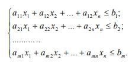

Этапы построения математических моделей.
Математическое программирование подразделяется на линейное, целочисленное, нелинейное, динамическое программирование. Одним из направлений математического программирования является линейное программирование, в котором ярко проявляются специфические трудности нахождения экстремума на границе допустимой области переменных. Задачи линейного программирования (ЛП) относятся к категории оптимизационных. Они находят широкое применение в различных областях практической деятельности: при организации работы транспортных систем, в управлении промышленными предприятиями, при составлении проектов сложных систем. Линейное программирование – раздел теории оптимизации, посвященный изучению и решению экстремальных задач, в которых линейная функция и ограничения, задающие допустимое множество, являются линейными. Задача линейного программирования формулируется так: определить максимум (минимум) линейной формы
F(x1,…,xn )=c1x1+…+cnxn max(min)
при условии, что точка (х1, х2,..., хn) принадлежит некоторому множеству D, которое определяется системой линейных неравенств

Любое множество значений (х1*, х2*,..., хn*), которое удовлетворяет системе неравенств задачи линейного программирования, является допустимым решением данной задачи. Если при этом выполняется неравенство
Вектор X = (xi , х2,..., xj), удовлетворяющий ограничениям задачи ЛП, называется допустимым решением или планом. Допустимый план X* =(xl ,x'2,...,x'n), при котором целевая функция задачи ЛП принимает максимальное (минимальное) значение, называется оптимальным планом [4,10]. Таким образом, каноническая задача линейного программирования состоит в нахождении среди всех решений выписанной выше системы линейных уравнений такого ее неотрицательного решения, на котором достигает своего минимального (максимального) значения линейная целевая функция. Для того чтобы построить экономико-математическую модель задачи линейного программирования, необходимо определить: 1) искомые величины задачи; 2) цель решения, т.е. параметр задачи, который будет критерием эффективности (оптимальности) решения, и направление его изменения (увеличение или уменьшение) для достижения наилучших результатов; 8 3) какие условия в отношении искомых величин и ресурсов задачи должны быть выполнены. Эти условия устанавливают, как должны соотноситься друг с другом различные параметры задачи, например, количество ресурса, затраченного при производстве, и его запас на складе.
Выполнение лабораторной работы
Чтобы закрепить прочитанный вами теоретический материал, вам необходимо выполнить лабораторную работу, которая прикреплена: Лабораторная работа №2